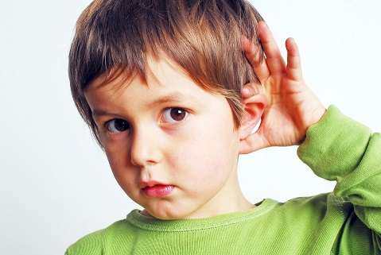
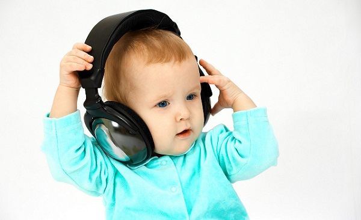

ДОМАШНИЙ ТЕСТ НА ПРОВЕРКУ СЛУХА
Возраст |
Ваши наблюдения |
Да |
Нет |
2—6 месяцев |
Обращает взгляд на говорящего |
||
Успокаивается при звуках вашего голоса |
|||
Поворачивает голову на нормальные звуки окружающей среды |
|||
Пугается от неожиданного шума |
|||
Наслаждается звуком вашего голоса и успокаивается, когда его слышит |
|||
6—12 месяцев |
Ребенок поворачивается на звук вашего голоса, когда вы входите в комнату |
||
Откликается на имя, когда его зовут сзади |
|||
Лепечет, как будто пытаясь повторять за вами |
|||
Ребенок завороженно и с видимым удовольствием слушает человеческую речь |
|||
Поворачивается на звуки знакомого голоса при нормальной громкости разговора |
|||
Лепечет, и ему явно нравится слышать свои собственные звуки |
|||
Утихомиривается под успокаивающую музыку |
|||
1—2 года |
Ребенку нравится имитировать издаваемые вами звуки |
||
|
Отвечает на простые просьбы: «иди баюшки», «принеси мяч» |
||
|
Отвечает на простые вопросы: «где собачка?», «где Бобби?» |
||
|
Реагирует на поочередные, составные просьбы: «принеси мяч... брось его папочке...» |
||
|
Отвечает на вопросы о кормлении: «Ты хочешь еще?» |
||
|
Бежит к двери, когда вы говорите: «Пойдем» |
||
|
Машет, когда вы говорите, но не обозначаете жестом, «пока-пока» |
||
|
Ребенок начинает меньше указывать жестами и знаками |
||
|
Поворачивается на звук вашего голоса в обе стороны, если его зовут сзади и если с ним говорят тихим голосом сначала с одной стороны, а потом с другой |
||
2—4 года |
Словарный запас ребенка увеличивается по меньшей мере на 2—3 новых слова в неделю |
||
|
Задает вопросы «Почему?» и «Что?» |
||
|
Указывает на знакомые картинки в книге, когда их называют |
||
|
Замечает звуки окружающей среды, такие как звонок телефона, стук в дверь |

Чтобы определить, хорошо или нет слышит ваш ребенок, наблюдайте за его реакцией на обычные повседневные звуки. Ниже приведены контрольные точки по возрастам.
СОВЕТ ДОКТОРОВ СИРС: СЛУХОВОЙ ТЕСТ Запланируйте слуховой тест на время, когда результаты будут более достоверными, а именно:
Используйте эти советы, сравнивая с результатами обычных слуховых тестов, проводимых в школе. Самый легкий для родителей способ определить, в порядке ли слух ребенка, — оценить, насколько он реагирует и проявляет внимательность в любом возрасте. |
Если вы поставили несколько крестиков в колонке «нет», стоит отвести ребенка к врачу, который проверит, нет ли у него жидкости в полости среднего уха и не забит ли наружный слуховой проход ушной серой. Основываясь на истории болезни ребенка, составленной вами, ваш врач определит, надо ли и когда направить вас к специалисту (сурдологу) для всесторонней проверки слуха.
Помимо вышеперечисленных специфических признаков обязательно проверьте слух своего ребенка, если он:
ЗАЩИТИТЕ СЛУХ СВОЕГО РЕБЕНКА
Помимо скопления жидкости в среднем ухе слух может повредить слишком частое воздействие громких звуков. Постоянное воздействие может навсегда испортить слух. Взрослым достаточно сказать: если звук причиняет боль вашим ушам, в них и после этого звенит, звук слишком громкий. И хотя иногда дети могут заткнуть уши, многие смиряются с шумом и портят слух. Повреждение слуха может произойти от повторяющего шума громкостью больше 85 децибел (ДцБ). Чтобы вы поняли, что это значит: обычный разговор — это 50— 65 ДцБ, пылесос — 70 ДцБ, фен — 70 ДцБ, блендер — 100 ДцБ, газонокосилка —110 ДцБ, электропила — 110 ДцБ. Чем громче звук, тем быстрее он портит слух. Шумовая травма наносит необратимые повреждения, так как она разрушает в ушах крошечные волокна-реснички, которые вибрируют в ответ на звук. Реснички не могут правильно вибрировать, что ослабляет слух. Вот некоторые способы, как «надеть наушники» на своего ребенка:

Здоровье ребенка от докторов Сирс / Сирс У. и др.